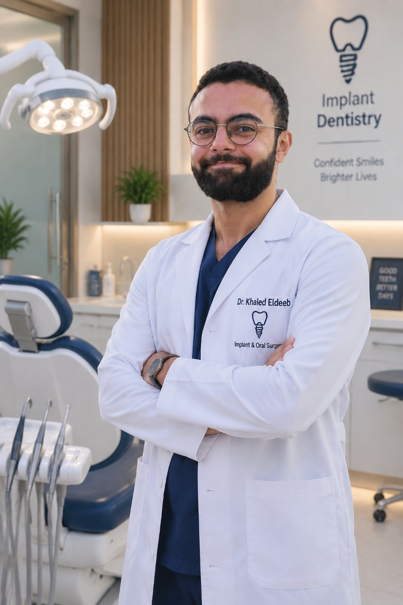
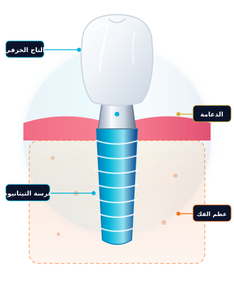

مع د. خالد الديب، وداعاً للعمليات الجراحية المعقدة وأطقم الأسنان المتحركة المزعجة. نوفر أحدث تقنيات الزراعة الموجهة بالكمبيوتر ثلاثية الأبعاد وغرسات التيتانيوم السويسرية والأمريكية المعتمدة عالمياً مع ضمان مدى الحياة.

أجب عن 3 أسئلة بسيطة للحصول على تقييم سريري أولي ومعرفة الحل والبروتوكول الأنسب لابتسامتك قبل زيارة العيادة.
الزرعة تحاكي السن الطبيعي بكل تفاصيله وتلتحم بعظام الفك لتصبح جزءاً دائماً من جسمك.

على عكس الجسور والتركيبات الثابتة القديمة التي تتطلب برد ونحت الأسنان المجاورة السليمة، فإن زراعة الأسنان تحمي أسنانك وتحافظ على شكل وجهك.
تثبت داخل عظم الفك وتلتحم معه حيوياً (Osseointegration) لتمنع تآكل أو انحسار عظام الفك الناتج عن فقدان الأسنان.
قطعة متناهية الدقة تربط بين الجذر وعاج السن، ومصممة لضمان حماية اللثة وتوزيع قوى المضغ بشكل مثالي متوازن.
يتم تصميمه رقمياً بلون وشفافية مطابقة لأسنانك الطبيعية تماماً، ويقاوم التصبغ والكسر لسنوات طويلة.
نعتمد على أعلى التكنولوجيات الألمانية والأمريكية لتقديم حلول علاجية دقيقة، غير مؤلمة، وسريعة لجميع الحالات المعقدة.
زراعة ثلاثية الأبعاد بدون شق جراحي وبدون خياطة أو نزيف. يتم التخطيط على الكمبيوتر وطباعة دليل جراحي رقمي يحدد مكان وعمق الزرعة بدقة ميكرومترية فائقة.
خلع السن المتهالك، تثبيت الغرسة، وتركيب سن مؤقت في نفس الزيارة. لن تضطر للبقاء يوماً واحداً بدون أسنان أو الشعور بالحرج أثناء التحدث والابتسام.
الحل الدائم والنهائي لمن يعانون من فقدان كامل الأسنان أو مشاكل الأطقم المتحركة. نثبت جسراً ثابتاً متكاملاً للفك بالكامل على 4 أو 6 غرسات فقط بتكلفة أقل وثبات 100%.
هل قيل لك سابقاً "عظام الفك لديك ضعيفة ولا تكفي للزراعة"؟ نقوم بإعادة بناء وتكثيف العظم باستخدام طعوم عظمية حيوية معتمدة ورفع الجيب الأنفي لإتاحة الزراعة بأعلى أمان.
تصنيع التيجان والتركيبات الخزفية بأحدث أجهزة الخراطة الرقمية بدقة الميكرون، لتوفير مظهر فائق الجمال بصلابة تقاوم الصدمات ولون طبيعي لا يتغير بمرور الزمن.
تجهيز بيئة الفم واللثة قبل الزراعة والتخلص من التهابات الأنسجة وتنسيق حواف اللثة بالليزر التجميلي بدون ألم أو نزيف لضمان ابتسامة هوليوودية متناسقة.
حرك المقبض التفاعلي يميناً ويساراً لمشاهدة تحول الابتسامة من فقدان السن إلى النتيجة التجميلية النهائية بعد تثبيت تاج الزيركون.
صممنا بروتوكول العلاج ليكون مريحاً ومطمئناً بالكامل، لتشعر بالثقة في كل خطوة من خطوات العلاج.
تصوير الفك بالأشعة المقطعية ثلاثية الأبعاد (CBCT) داخل العيادة لفحص سماكة العظم ومسار الأعصاب وتحديد الخطة على الشاشة أمامك.
تحت التخدير الموضعي الإلكتروني وبواسطة الدليل الجراحي الموجه، يتم تثبيت غرسة التيتانيوم بدقة متناهية دون جراحة تقليدية.
تركيب سن مؤقت للحفاظ على مظهرك التجميلي، وإعطاء الغرسة فترة التئام طبيعية لتلتحم بالعظام وتصبح أقوى من جذر السن الطبيعي.
تثبيت تاج الزيركون التجميلي الدائم واستلام بطاقة الضمان الدولية الخاصة بغرستك للاستمتاع بابتسامة دائمة مدى الحياة.
نجمع بين الخبرة الجراحية العميقة وأحدث تكنولوجيا طب الأسنان في العالم لتقديم تجربة علاجية لا مثيل لها.
نستخدم حصرياً أشهر أنواع الغرسات السويسرية والأمريكية المعتمدة من منظمة الغذاء والدواء الأمريكية (FDA)، ويحصل كل مريض على بطاقة ضمان دولية بالرقم التسلسلي للزرعة.
وداعاً لخوف طبيب الأسنان. نطبق تقنيات التخدير الموضعي المتطور ووسائل التهدئة الحديثة لضمان تجربة علاجية مريحة لا تشعر خلالها بأي ألم إطلاقاً.
نطبق بروتوكولات مكافحة العدوى والتعقيم المستشفي الأوروبي باستخدام أجهزة الأوتوكلاف Class B لضمان بيئة علاجية آمنة ومعقمة بنسبة 100%.
نوفر جهاز الـ CBCT داخل العيادة لتوفير وقتك وجهدك، والتشخيص الدقيق الفوري في أول زيارة دون الحاجة لإجراء الأشعة في مراكز خارجية.
نؤمن بأن الابتسامة الصحية حق للجميع، لذلك نوفر باقات علاجية مرنة وأنظمة تقسيط بنكية وبدون فوائد عبر مختلف بطاقات الائتمان لتناسب ميزانيتك.
علاقتنا بك لا تنتهي بانتهاء الجلسة. فريق المتابعة الطبية يتواصل معك بانتظام لتقديم الإرشادات وفحوصات دورية لضمان صحة اللثة واستقرار الزرعة.
يُعد د. خالد الديب من رواد جراحة وزراعة الأسنان في الإسكندرية ومصر، ويحمل شعار "Confident Smiles, Brighter Lives" لتمكين مرضاه من استعادة ابتساماتهم وثقتهم بأعلى درجات الراحة والأمان. يتميز بالدقة السريرية وتطبيق أحدث بروتوكولات الزراعة الرقمية الموجهة بالكمبيوتر ثلاثية الأبعاد بدون جراحة تقليدية وبدون ألم.
ثقة المرضى وسعادتهم بالنتيجة النهائية هي المعيار الحقيقي لنجاحنا.
"كنت مرعوبة جداً من فكرة زراعة الأسنان ومستحملة الألم والفراغ لسنتين. مع دكتور خالد بجد ما حسيتش بأي وجع وقت التخدير أو العملية كلها! عملت زرعتين في نفس اليوم ومفيش أي تورم بعدها، شكراً يا دكتور."
"والدي كان بيعاني جداً مع الطقم المتحرك ومكنش بيعرف ياكل براحته ومحرج يبتسم. دكتور خالد عمله زراعة فك كامل All-on-4، والنتيجة غيرت حياته 180 درجة ورجع ياكل كل حاجة والأسنان ثابتة ومريحة جداً."
"أكتر حاجة طمنتني هي النظافة والتعقيم العالي وشرح د. خالد لكل خطوة بالأشعة ثلاثية الأبعاد قبل ما يلمس أسناني. استلمت كارت الضمان السويسري للزرعة، والسن شكله طبيعي جداً ومحدش بيفرقه عن باقي أسناني."
إجابات طبية واضحة ومباشرة من د. خالد الديب للإجابة على جميع تساؤلاتك قبل حجز موعدك.
لا، إطلاقاً. تتم عملية زراعة الأسنان تحت تأثير تخدير موضعي إلكتروني فعال للغاية يجعل المنطقة مخدرة تماماً، ولن تشعر بأي ألم أثناء الجلسة. في الواقع، يصف معظم المرضى ألم زراعة الأسنان بأنه أقل بكثير من ألم خلع السن العادي، وبفضل تقنية الزراعة الموجهة بالكمبيوتر بدون شق جراحي، فإن التورم بعد العملية يكون شبه معدوم ويمكنك العودة لعملك في اليوم التالي مباشرة.
نعم، زراعة الأسنان آمنة جداً لمرضى السكري والضغط بشرط أن تكون القراءات منتظمة وتحت السيطرة. نطلب تحليلاً تراكمياً (HbA1c) ومتابعة طبية دقيقة لضبط قياس السكر، ومع استخدام الغرسات السويسرية المتطورة ذات الأسطح المعالجة حيوياً، تكون نسبة نجاح الزراعة لمرضى السكري المنتظم مماثلة للشخص السليم بنسبة تفوق 98%.
تعتبر زراعة الأسنان حلاً دائماً لمدى الحياة (Lifetime Solution). التيتانيوم مادة متوافقة بيولوجياً تندمج مع خلايا العظم بشكل كامل كأنها جزء من هيكل جسمك. مع الحفاظ على نظافة الفم بالفرشاة والخيط وزيارة طبيب الأسنان للفحص الدوري كل 6 أشهر، تستمر الزرعة معك طوال العمر، ونحن نمنحك بطاقة ضمان معتمدة على جسم الغرسة.
التركيبات الثابتة التقليدية (الجسور) تتطلب نحت وبرد السنين السليمين المجاورين للسن المفقود لتعليق السن عليهما، مما يضعف تلك الأسنان ويجعلها عرضة للتسوس وسحب العصب لاحقاً، كما أنها لا تمنع ذوبان عظم الفك في مكان الفراغ. أما زراعة الأسنان، فتثبت جذراً مستقلاً يحافظ على الأسنان المجاورة سليمة 100% ويحفز عظام الفك ويمنع تآكلها وشيخوخة الوجه.
نعم، وهذا ما يُعرف طبياً بـ "الزراعة الفورية" (Immediate Implantation). إذا كانت حالة السن المتهالك خالية من الالتهابات الصديدية الحادة وكان عظم الفك كافياً، يقوم د. خالد الديب بخلع السن بلطف وتثبيت الغرسة في نفس التجويف وتركيب تاج مؤقت في نفس الموعد دون الحاجة لشهور انتظار أو زيارات جراحية متكررة.
تعتمد التكلفة على نوع الغرسة المختارة (سويسرية، ألمانية، أمريكية)، والحاجة لتدخلات مساعدة مثل زراعة العظم، وعدد الأسنان. نوفر في عيادة د. خالد الديب شفافية تامة في الأسعار بدون أي مصاريف خفية، بالإضافة إلى أنظمة تقسيط مريحة عبر البنوك وتطبيقات التقسيط الرائدة في مصر لتسهيل الدفع بأقساط شهرية ميسرة.
سجل بياناتك وسيتم التواصل معك فوراً لتأكيد الموعد المناسب والإجابة على استفساراتك وتحديد موعد فحص الأشعة المقطعية.
رؤية محاكاة الابتسامة وشكل السن قبل بدء العلاج لضمان النتيجة.
تأكيد سريع لمواعيد الكشف واستقبال الأشعة عبر الواتساب على مدار الساعة.
أدخل بياناتك للحصول على أولوية الحجز واستشارة د. خالد الديب